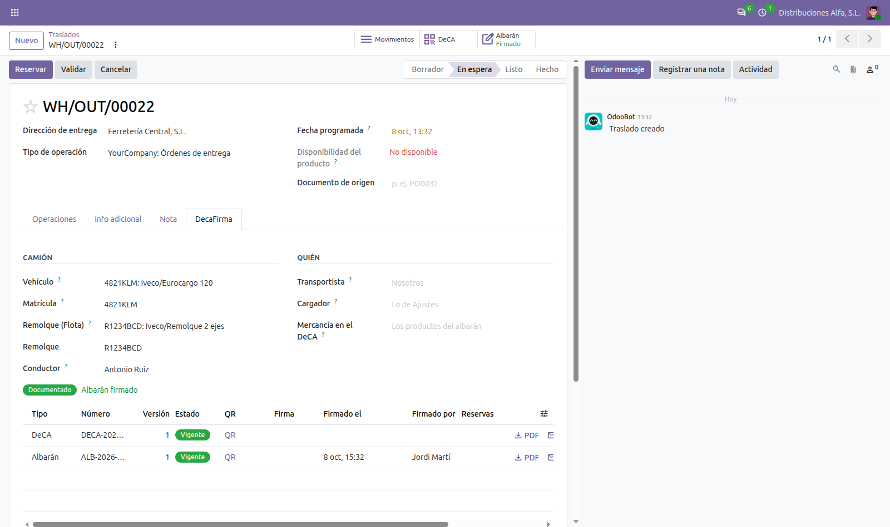

● DecaFirma de Fran<code>systems · DECA + FLEET
If you keep your trucks in Odoo Fleet, there is no need to type plates by hand: choose the vehicle on the outgoing transfer or on the delivery route, and its plate and its driver go into the DeCA issued with DecaFirma Inventory.
✓ Odoo 17 · 18 · 19 · 20✓ Community and Enterprise✓ Free module✓ Installed by itself
Features
Truck from Fleet
Trailer from Fleet
Delivery routes too
Still editable
How it works
Have both apps
With DecaFirma Inventory and Fleet installed, this module is installed by itself.
Choose the vehicle
In the DecaFirma tab of the transfer or the route: truck and trailer.
Issue the DeCA
Plate, trailer plate and driver are already there.
Screenshots
The user interface is in Spanish: the DeCA is a Spanish legal document.
01
Vehicle and trailer on the transfer
The Fleet truck fills in the plate and the driver; the Fleet trailer, the trailer plate.

What is included
| Included in the module | |
|---|---|
| Vehicle from Fleet on the outgoing transfer: plate and driver into the DeCA | ✓ |
| Trailer from Fleet: its plate into the DeCA | ✓ |
| The same on batch transfers (delivery routes) | ✓ |
| Also on create and save without the form (imports, other apps) | ✓ |
| Plate still editable by hand | ✓ |
| Installed by itself with DecaFirma Inventory and Fleet. In Odoo 17 to 19, together with DecaFirma Delivery Routes | ✓ |
| Odoo 17, 18, 19 and 20, Community and Enterprise. User interface in Spanish | ✓ |
FAQ
→ What do I need?
DecaFirma Inventory and Fleet, and a DecaFirma account with the API: it is included in the 7-day trial and, after it, comes with the Conexión add-on. The modules are free. In Odoo 17 to 19 it also needs DecaFirma Delivery Routes (with Batch Transfers). Create your DecaFirma account.
→ Does it send more data to DecaFirma?
No. Only the plate, the trailer plate and the driver, as without this module. Those do go to DecaFirma, which issues the DeCA: nothing else from Fleet.
→ Does it work on Odoo Online?
No. Odoo Online does not install apps with Python code. It works on Odoo.sh and on your own server, Community or Enterprise.
→ What if the driver of the day is not the Fleet driver?
Change the driver on the transfer before issuing. The plate and the driver can always be edited by hand.
Support
DecaFirma is made by Francodesystems, in el Vallès. We build and maintain these Odoo modules ourselves, next to the DecaFirma app and its API.
Before you start
Write to us and we will tell you honestly whether issuing from Odoo fits the way you work.
Help to set it up
API key, notices and the first DeCA, by email. If you get stuck, we look at it with you.
Kept up to date
Odoo 17, 18, 19 and 20. Fixes on every version.
juan.canton@francodesystems.com · decafirma.com
More from DecaFirma and Francodesystems
🇪🇸 EN ESPAÑOL
● DecaFirma de Fran<code>systems · DECA + FLOTA
Si tienes los camiones en Flota de Odoo, no hace falta escribir matrículas a mano: eliges el vehículo en el albarán de salida o en la ruta de reparto, y su matrícula y su conductor van al DeCA que emite DecaFirma: Inventario.
✓ Odoo 17 · 18 · 19 · 20✓ Community y Enterprise✓ Módulo gratuito✓ Se instala solo
Funciones
Camión de Flota
Remolque de Flota
También en las rutas
Se puede tocar
Cómo funciona
Ten las dos apps
Con DecaFirma: Inventario y Flota instaladas, este módulo se instala solo.
Elige el vehículo
En la pestaña DecaFirma del albarán o de la ruta: camión y remolque.
Emite el DeCA
Matrícula, remolque y conductor ya están puestos.
Capturas
01
Vehículo y remolque en el albarán
El camión de Flota pone la matrícula y el conductor; el remolque de Flota, la matrícula del remolque.
Qué incluye
| Incluido en el módulo | |
|---|---|
| Vehículo de Flota en el albarán de salida: matrícula y conductor al DeCA | ✓ |
| Remolque de Flota: su matrícula al DeCA | ✓ |
| Lo mismo en las agrupaciones de albaranes (rutas de reparto) | ✓ |
| También al crear y guardar sin pantalla (importaciones, otras apps) | ✓ |
| Matrícula editable a mano | ✓ |
| Se instala solo con DecaFirma: Inventario y Flota. En Odoo 17 a 19, junto con DecaFirma: Rutas de reparto | ✓ |
| Odoo 17, 18, 19 y 20, Community y Enterprise. Interfaz en castellano | ✓ |
Preguntas
→ ¿Qué necesito?
DecaFirma: Inventario y Flota, y una cuenta de DecaFirma con la API: va incluida en la prueba de 7 días y, después, con el extra Conexión. Los módulos son gratis. En Odoo 17 a 19 necesita además DecaFirma: Rutas de reparto (con Traslados por lote). Crea tu cuenta de DecaFirma.
→ ¿Manda más datos a DecaFirma?
No. Solo la matrícula, la del remolque y el conductor, como sin este módulo. Esos sí van a DecaFirma, que es quien emite el DeCA: nada más de Flota.
→ ¿Funciona en Odoo Online?
No. Odoo Online no instala apps con código Python. Funciona en Odoo.sh y en tu propio servidor, Community o Enterprise.
→ ¿Y si hoy conduce otro, no el de Flota?
Cambia el conductor en el albarán antes de emitir. La matrícula y el conductor siempre se pueden tocar a mano.
Soporte
DecaFirma lo hace Francodesystems, en el Vallès. Hacemos y mantenemos estos módulos de Odoo nosotros mismos, junto con la aplicación de DecaFirma y su API.
Antes de empezar
Escríbenos y te decimos con sinceridad si emitir desde Odoo encaja en tu forma de trabajar.
Ayuda para ponerlo en marcha
Clave de la API, avisos y el primer DeCA, por correo. Si te atascas, lo vemos contigo.
Siempre al día
Odoo 17, 18, 19 y 20. Correcciones en cada versión.
juan.canton@francodesystems.com · decafirma.com
Más de DecaFirma y Francodesystems